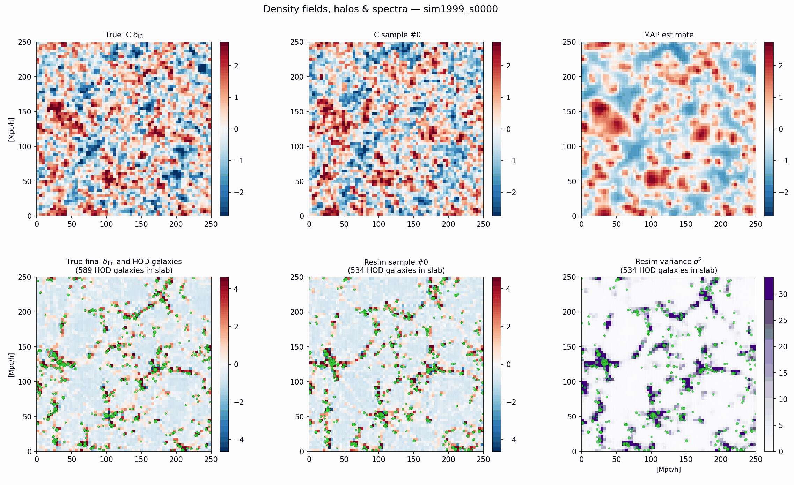

Machine Learning for Astroparticle Physics:
A Crash-course in SBI
Lecture 4a: Normalising flows and other generative models
Christoph Weniger, University of Amsterdam (GRAPPA)
Normalising flows
A flexible density from invertible maps, via the change-of-variables formula.
Why we need flows
Real posteriors in physics are often multimodal, curved, or heavy-tailed. Gaussians can't represent them.
Needed for the NPE loss.
Needed for corner plots, downstream analyses.
Multimodal, curved, heavy-tailed.
MLPs on raw outputs fail ①: nothing forces normalisation.
Normalising flows satisfy all three by construction, via the change-of-variables formula.
The big picture
A simple base density \(\pi_0(\mathbf{z}_0)\) is pushed through a chain of invertible maps \(f_i\) into a complex target \(\pi_K(\mathbf{z}_K)\).

Figure: Lilian Weng, “Flow-based Deep Generative Models” (2018), lilianweng.github.io, after Weng's adaptation of Rezende & Mohamed (2015), arXiv:1505.05770.
Change of variables
Normalising flows are based on the change-of-variables formula.
Example: warping a Gaussian
The volume compression can be nicely visualised in the univariate case.Base \(\mathcal{N}(0,1.5^2)\) pushed through \(\theta = z + A\sin z\). For \(A < 1\) the map is strictly monotonic, still invertible, but as \(A\to 1\) the derivative near \(z=\pm\pi\) collapses, so density mass piles up there: the warped target becomes bimodal.
to build a normalising flow, we now stack many simple invertible maps to generate a complex one.
- Sampling \(\boldsymbol\theta \sim q_\phi\): draw \(\mathbf{z}\), push forward through the stack.
- Density evaluation at a given \(\boldsymbol\theta\): invert the stack, evaluate \(p_Z\), correct with Jacobians.
- Composition of invertible maps is invertible, deep flows stay a valid density.
Log-density by chain of Jacobians
Evaluating the loss function (NLL) is formally straightforward.
Key design constraint: each \(|\det \partial f_\ell / \partial \mathbf{z}_{\ell-1}|\) must be computationally cheap.
Example: Affine coupling layers
A specific type of mapping with cheap log determinant are affine coupling layers.\(\mathbf{z}_A\) passes through untouched; \(\mathbf{z}_B\) is scaled-and-shifted given \(\mathbf{z}_A\). Trivially invertible in closed form.
\(J\) is triangular ⇒ \(\log|\det J| = \sum_i s_\phi(\mathbf{z}_A)_i\). \(\mathcal{O}(d)\), not \(\mathcal{O}(d^3)\).
Then alternate which half is "active" across layer. Stack \(L\) of these → expressive flow.
This is RealNVP: Dinh, Sohl-Dickstein & Bengio, “Density estimation using Real NVP” (2016), arXiv:1605.08803.
Why the Jacobian is cheap
Flow pushforward, live 2D demo
Colours tag fixed \(z\)-points by angle, watch each coupling layer bend the cloud step by step into the banana.
Trained live in your browser with TF.js. Each layer: \(x_b = z_b \cdot e^{s(z_a)} + t(z_a)\), swapping \(a\leftrightarrow b\). Exact log-density via \(\log|\det J| = \sum_\ell s_\ell\).
Conditional flows, plugging in the data
From modeling densities to modeling conditional densities.- Embedding \(T_\phi(\mathbf{x})\) compresses the data (CNN / Transformer / GNN, see Lec 4).
- Conditional flow turns \(\mathbf{z}\sim\mathcal{N}(0,I)\) into \(\boldsymbol\theta\), with all coupling-layer parameters depending on \(T_\phi(\mathbf{x})\).
- Loss: \(-\log q_\phi(\boldsymbol\theta^\star\mid\mathbf{x})\) averaged over simulator pairs.
Every component, embedding and coupling networks \(s, t\), is trained together by backprop.
Other generative models, at a glance
Coupling normalising flows are but one choice of conditional head \(q_\phi(\boldsymbol\theta\mid\mathbf{x})\). Others trade exact density for scale or speed:
- Discrete normalising flows (RealNVP, neural spline, ...). Low to moderate dim (\(\lesssim 100\)), exact density, fast sampling.
- Continuous normalising flows (neural ordinary differential equation, ODE). Normalising flow with "infinite steps"; exact density via ODE; training/sampling requires ODE.
- Flow matching. Similar to continuous normalising flows, but without ODE solve during training (much faster).
- Diffusion / score-based (neural stochastic differential equation, SDE). For high-dimensional, image- or field-shaped data; fast training; slow sampling (requires SDE).
- Autoregressive models / Transformers Can handle varying parameter dimensionality (transdimensional), exact likelihoods, but sampling is sequential and can be slow.
- Cross entropy/classification. Discrete parameters, closed-form conditional, simple and fast.
Example: stochastic GW background with LISA
Here the parameter \(\boldsymbol\theta\) is four-dimensional, and describes properties of the stochastic GW background and noise model. We estimate the posterior \(q_\phi(\boldsymbol\theta\mid\mathbf{x})\) based on synthetic LISA data.
Normalising flows allow to model non-Gaussian (here potato-shaped) posteriors, which are common in physics.

Example: reconstruction of the initial matter density field
Here the parameter describes the initial density field at redshift $z=1000$, and it is \(64\times64\times64 = 262144\) dimensional. We estimate the posterior \(q_\phi(\boldsymbol\theta\mid\mathbf{x})\) based todays density field.
The posterior is approximated as a multivariate Gaussian, $q_\phi(\boldsymbol\theta\mid\mathbf{x}) = \mathcal{N}(\boldsymbol\mu_\phi(\mathbf{x}), \Sigma_\phi(\mathbf{x}))$.

(Preliminary, Oleg Savchenko, in preparation)What next?

We now discussed the red block in the diagram below: the conditional head \(q_\phi(\boldsymbol\theta\mid\mathbf{x})\) can be a normalising flow, or any other generative model. Next we will discuss a classical example for a summary network \(T_\phi(\mathbf{x})\), the CNN.